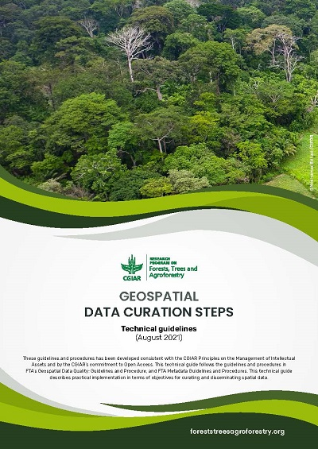
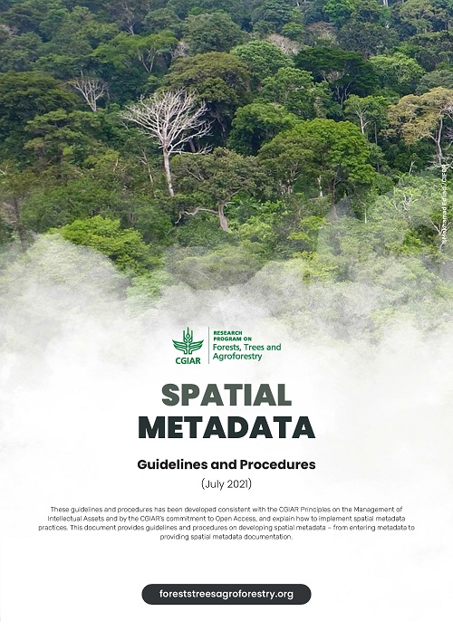
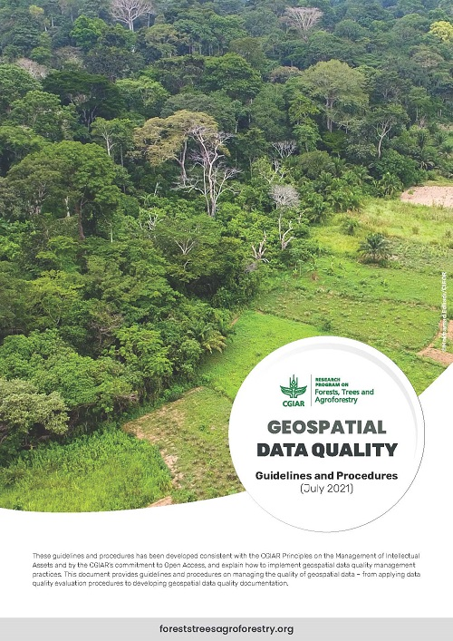

Last update: 25 November 2021
As a collaborative research project, involving numerous researchers from member organisations, data sharing is important for FTA to optimise the use of their data inventory as well as for exchanging their knowledge, thus improving the quality and exposure of FTA research. FTA geoportal has been designed and developed as a system that can facilitate effective and efficient (geospatial) data access to, and data sharing among, internal data inventory as well as that of other organisations. Moreover, the geoportal is also expected to fulfil the need for showcasing or disseminating FTA research to a wider community/audience.
In order to make the most benefit of the FTA Geoportal, geospatial data must be prepared appropriately to meet the quality requirements. Data curation is required to ensure the data management is conducted in the most appropriate way, and metadata are required for conveying the data quality as well as other descriptive information concerning geospatial data for data sharing purposes. These documents are prepared by FTA team as the guidelines for data management under the FTA.
Digital curation can be defined as maintaining and adding value to a trusted body of digital information for current and future use (Beagrie 2006). It is beyond archiving and preservation. Digital data curation is concerned with data management "for as long as it continues to be of scholarly, scientific, research and/or administrative interest, with the aim of supporting reproducibility of results, reuse of and adding value to that data, managing it from its point of creation until it is determined not to be useful, and ensuring its long-term accessibility and preservation, authenticity and integrity" (DCC n.d. in Sandifer n.d.).
Spatial metadata or geographic metadata can be defined as metadata applicable to geographic data and information. This metadata can be stored along with geospatial data (vector and raster format) or may be listed in a separate document. There are many standards for geospatial metadata, including the International Organization for Standardization (ISO) and Federal Geographic Data Committee (FGDC) metadata standards. This document adopts (ISO) 19115-1:2014 - Geographic Information - Metadata as the standard for developing geographic information or spatial metadata.
In this document, the term "geospatial data" is used to refer to data that provides information on the location of features, attributes, and often temporal information as well. Different types of geospatial data can be produced for different purposes and through different processes.
